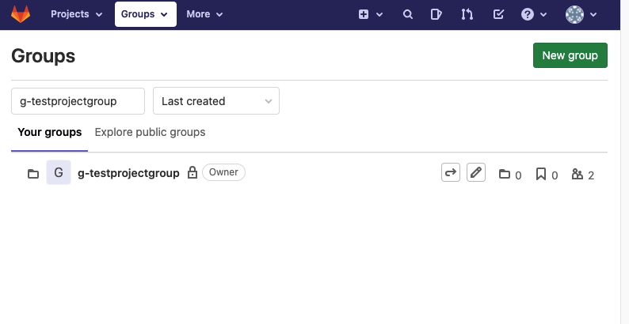
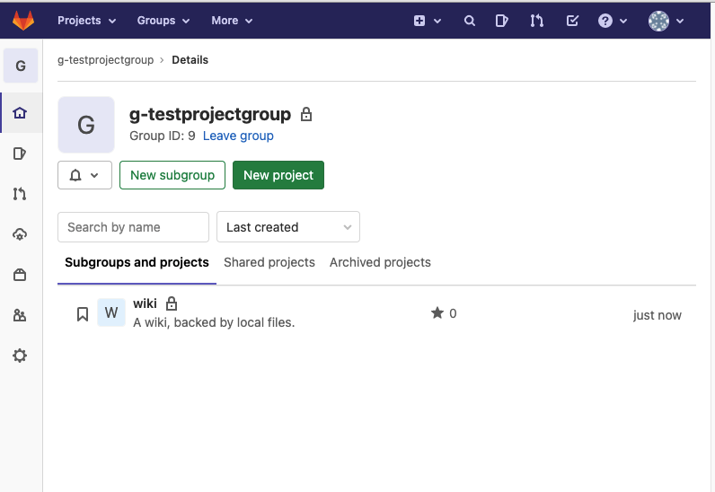
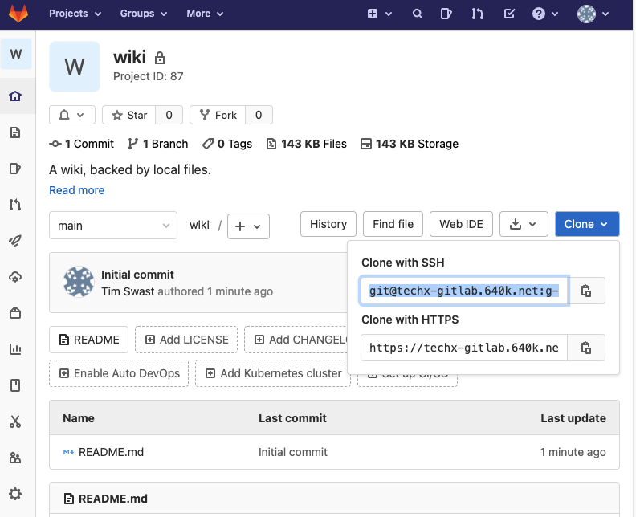

In this codelab, create the foundation for your wiki. You'll also practice collaborating in real-time with your teammates on a shared code repository.
Prerequisites
- Cloud Shell
- Git
- Linux command line
What you'll need
- Google account
- GitLab account
- Web browser (Google Chrome recommended)
What you'll learn
- Setup an empty Python repository
- Use cURL from the command-line to download a
.gitignorefile - Collaborate with teammates in real-time
The instructors have created a group and empty repository in GitLab. Find your repository and clone it to your development environment.
Find the repository in GitLab
- Navigate to "Groups" ( https://techx-gitlab.640k.net/dashboard/groups) and find the group corresponding to your project group. 
- Click the name of the project group.
- In the "projects" listing, click the "wiki" repository. 
- Click the Clone button to see the repository URLs. 
- Copy the text from Clone with SSH.
Clone the repository in Cloud Shell
- Navigate to the Google Cloud Console: https://console.cloud.google.com/
- Click the Cloud Shell button
 at the top of the screen.
at the top of the screen. - Click the square button
 to open Cloud Shell in a new window.
to open Cloud Shell in a new window. - Clone the repository with the git clone command.
Replace the git@techx-gitlab.640k.net:g-GROUP_NAME/wiki.git part after git clone with the "Clone with SSH" URL you copied from GitLab.
git clone git@techx-gitlab.640k.net:g-GROUP_NAME/wiki.git
Open the repository in Cloud Shell Editor
- Click the pencil icon to open Cloud Shell Editor.
- Navigate to the File -> Open Workspace menu button.
- Select the "wiki" directory which has just been created.
Some files are undesirable to check into a Git repository. For example, they may be automatically generated, or they may be specific to a particular development environment. These files make the repository messy to review and aren't necessary for a developer using the project.
- Open the "Terminal" panel in Cloud Shell Editor.
- A ".gitignore" file (note the leading "." character) tells Git which files are not needed to be tracked.
Use cURL to download a ".gitignore" file with some useful defaults for Python.
curl -L \ https://raw.githubusercontent.com/github/gitignore/master/Python.gitignore \ > .gitignore
- Add all the changes you've made to the Git staging area.
git add .gitignore
- See which files have been staged.
git status
You should see the following output:
Changes to be committed:
(use "git rm --cached <file>..." to unstage)
new file: .gitignore
- Commit your changes.
git commit -m 'add .gitignore for Python development'
- Push your changes to GitLab.
git push origin main
Verify that .gitignore has been uploaded
Download the code that your teammate just pushed and merge it with your local copy.
- Download the code.
git fetch origin main
- Merge it into your local copy.
git merge origin/main
- Verify that you now have a ".gitignore" file with contents matching the file at https://github.com/github/gitignore/blob/master/Python.gitignore.
In other tutorials, you may see instructions that request you run git pull origin main. This command combines a "fetch" and "merge" in one step.
In many projects, it's helpful to have a file listing everyone who has contributed to it. In this page, you'll create this file. Later, everyone will contribute their own names to the file.
- Create a file named "AUTHORS.txt".
- Edit the file. Add a line containing your name, along with your email address. For example: "Tim Swast < swast@google.com>"
- Add the AUTHORS.txt file to the Git staging area.
git add AUTHORS.txt
- Commit your changes.
git commit -m 'add AUTHORS.txt'
- Push your changes to GitLab.
git push origin main
Verify that AUTHORS.txt has been uploaded
Download the file that your teammate just pushed and merge it with your local copy.
- Download the code.
git fetch origin main
- Merge it into your local copy.
git merge origin/main
- Verify that you now have an "AUTHORS.txt" file.
Now that the file has been created, all team members can contribute their names to the file.
- Edit the AUTHORS.txt file. Add a line containing your name, along with your email address. For example: "Tim Swast < swast@google.com>"
- Add the AUTHORS.txt file to the Git staging area.
git add AUTHORS.txt
- Commit your changes.
git commit -m 'add my name to AUTHORS.txt'
- Push your changes to GitLab.
git push origin main
Verify that AUTHORS.txt has been updated
Download the file that your teammate just pushed and merge it with your local copy.
- Download the code.
git fetch origin main
- Merge it into your local copy.
git merge origin/main
- If conflicts arise, refer to the Handling Conflicts with Git codelab. Unlike in that codelab, use the "Accept both changes" button when resolving the conflict.
- Verify that all the expected names appear in the "AUTHORS.txt" file.
Double-check that the code has been pushed by viewing the code on GitLab.
Continue to work together as a group, pushing your changes when you've added a feature, and pulling your teammates' changes often.